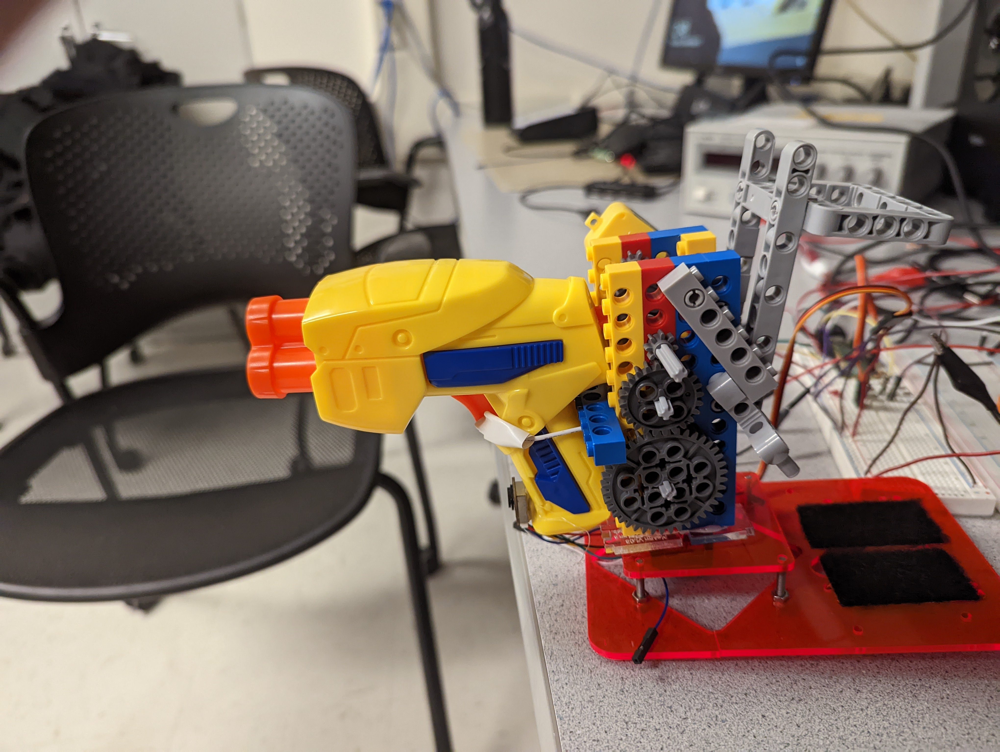
The purpose of this project was to create an auto-targeting nerf gun using various motors and sensors
This project integrates an RP2040, servo, DC motor, time-of-flight sensor, nerf gun, and other miscellaneous hardware to accomplish the completion of an auto-targeting nerf gun. The reason this project was chosen was because we wanted to create a fun project that gave us insight on how to integrate a variety of different hardware devices. As a quick summary, the turret sweeps an area of about 180 degrees, finds a target object, locks on, and “shoots.”
The main rationale for the project was that we wanted to integrate multiple hardware devices to create something fun. Given that we had a tiny Nerf gun, we concluded that we had a great opportunity to integrate a variety of sensors, servos, and motors by creating an auto-targeting system.
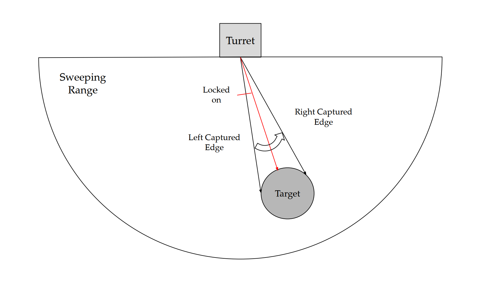
Figure 1: High Level Diagram
Figure 1 above gives a general overview of how the system works. The turret sweeps back and forth within a certain range (i.e., -90 degrees to 90 degrees), captures the edges of the target, and then centers on the object through a simple averaging function. This is when the trigger for the turret is pulled. Besides this, there was no basic background math that had to be involved. The structure of the project included implementing each hardware device independently and then integrating onto the final product. For example, the time-of-flight sensor was implemented independently of everything else and then interfaced with the rest of the system later. This helped the process of implementation because if there was trouble implementing one device, it didn’t necessarily interfere with the implementation of everything else.
Since this design included a somewhat complicated hardware design, there were some tradeoffs that had to be considered. The complexity of the hardware that was implemented produced some serious physical constraints on the system. For example, the motor to pull the trigger had to go through a gear ratio to produce enough torque to pull the trigger. Secondly, the size of the gun and trigger mechanism, along with the somewhat slow speed of the time-of-flight sensor, limited the maximum speed at which the servo could sweep. These were just some of the tradeoffs that had to be dealt with during implementation.
Besides the copyrights to the individual devices (Nerf gun, servo, Lego-bricks, time-of-flight sensor), there were no existing patents, copyrights, or trademarks that had to be considered.
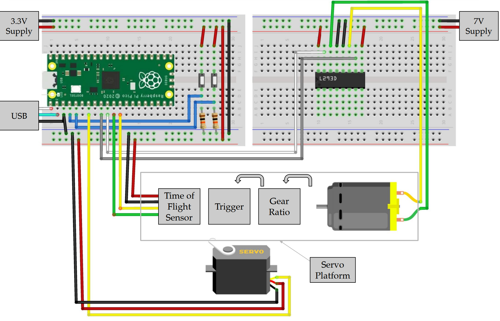
Figure 2: Hardware Diagram
As can be seen, various elements go into this devices circuit. First is the time of flight sensor which has a pinout according to figure 3
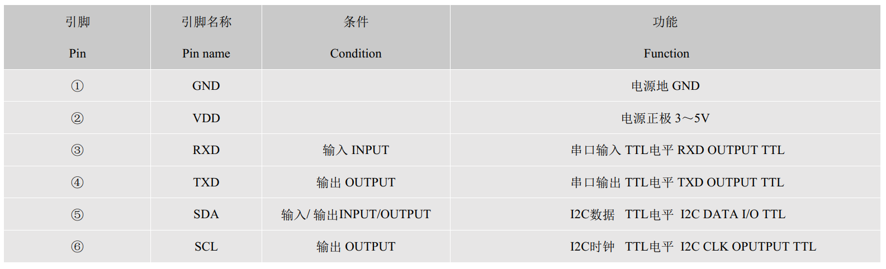
Figure 3: TOF10120 pinout, screenshot from reference (2)
As later discussed, we used the UART interface, so SCL and SDA were not connected to the pico, but as can bee seen from figure 2, TX and RX are connected to gpio pins and VCC and ground are connected to their respective lines. We also had to hookup buttons to gpio pins. We used 10K resistors to pull down these buttons because at 3.3V, this was a standard pulldown resistor value. The buttons' inputs were tied to VCC and the outputs tied to gpio inputs thus only going high when pressed. Next, we hooked up the servo motor controlling our gun's platform. This was assigned according to figure 7 later in the document. Finally the h-bridge which controls the DC motor pulling the trigger mechanism was connected according to figure 4,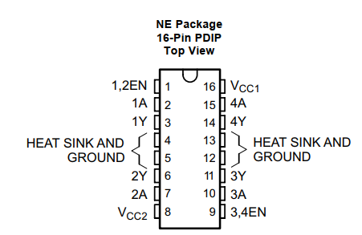
Figure 4: l293 pinout, screenshot from reference (4)
To connect this to the circuit, 'Y' represents an output, 'A' represents an input, and 'EN' represents enable. Because of this, we tied 4A and 3A to our 'forward' pwm channel and 'backward' pwm channel respectively. We then connected the inputs of the motor to the outputs of the h-bridge, the direction depending on which way we wanted the motor to move. The enable pin was set to VCC as the motor needed to be available at all times and if we needed the motor to stop, we could simply use a 0% duty cycle for both input pwm signals.As can be seen, the two breadboards in the circuit have different voltages. Most of the devices we used could operate at 3.3V, but the motor needed its own power supply at 7V in order to provide the power needed for the motor to pull the nerf gun's trigger. Unlike Lab3, we did not use 4N35 chips as the communication between the laser sensor and pico was robust enough that noise from the motor did not cause a problem to the circuit.
The first consideration of the program was the file structure. It was decided that a main.h header file would be included using all possibly necessary libraries for completing the project. This would also be where the gpio pin layout and pin macros would be defined in order for a reader to understand what each pin does just by looking at the main header file. Since sensor data collection was a simply blackbox function, methods associated with it were placed in the laser.c file in order keep the main.c size small.
The next consideration was what tasks the main function had to complete. There were three processes that the program had to run. It had to run a process to collect data from our distance sensor to gather data on the object, it had to interpret this data and adjust the servo motor moving the platform accordingly. The third process which was useful for debugging was a serial interface which would print out the state of various important variables. Since these processes were sharing memory such as the distance variable, these processes were divided up as 3 protothreads.
The first protothread, protothread_laser, would gather data from our laser sensor. This enters the discussion of the methods in laser.c. A few considerations had to be made with the TOF1012. The device has two communication ports attached to it, an i2c channel and a UART channel, so we had to decide which method to use. The i2c channel did not seem to operate correctly as there was no functional address that i2c messages could be sent to that would make the sensor function, so we used the UART channel.
To communicate with the laser sensor over UART, we first initialized the UART1 channel of the pico with laser_init() as the UART0 channel was used for communication with our computer. uart_init() was used with a baud rate of 115200. This was checked by connecting the sensor directly to the computer and opening up a serial terminal. We adjusted the baud rate until ascii characters appeared in the terminal. We then had to configure our TX and RX pins to UART using gpio_set_func(). After this initialization method completed we would read sensor data using laser_read(). This utilized the fact that the sensor simply sent a stream of messages in the form " , Range Valid\n\nd: (distance) mm". We read the message using uart_read_blocking() with a buffer of size 100 as the message would surely never get more than 100 bytes long. We wanted to capture the distance variable, so we simply used the scanf function or sscanf function since we wanted this data in a distance variable, so we used the line
sscanf(buf," , Range Valid\n\nd: %d mm",distance);
where 'distance' was the integer we would stick the distance value into. We chose an integer since the sensor would only print integer values within a range of less than 10000, so a short could have been used instead, but the program was not resource intensive, so this was skipped.
One problem we had with this function was that when the distance value suddenly got larger, the distance value would stay at whatever value it had previously been at. We found that the reason for this was that sscanf was failing. This is because when a large data value was captured from the laser it would send "Read Fail", so since this string was not in the form our sscanf function was expecting, sscanf would fail thus not updating distance. To fix this, we checked if this fail message had been sent using strstr which checks if one string contains another substring within it, so if this string was sent to the pico, then a large data value had been recorded, so we would set distance to 10,000 as that would be much larger than the range we want to shoot at objects inside of. So this assignment was based on
strstr(buf, "Fail") != NULL
which tells if "Fail" was in the message. If not, we would just read the distance value as we had done previously.
Currently we use a laser sensor, but we originally used an ultrasonic sensor. As opposed to the laser sensor, the ultrasonic sensor was connected in this pinout,
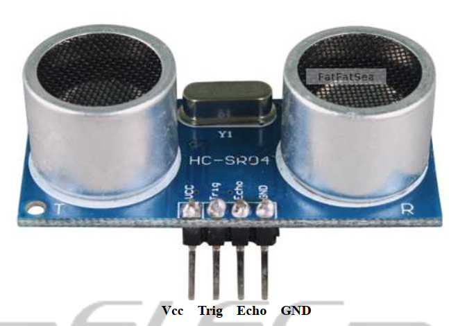
Figure 5: HC-SR04 pinout, screenshot from reference (3)
with trigger being an output gpio from the pico and echo being an input pin. To operate this sensor we followed both the tutorial at reference (5), but mostly relied on this figure
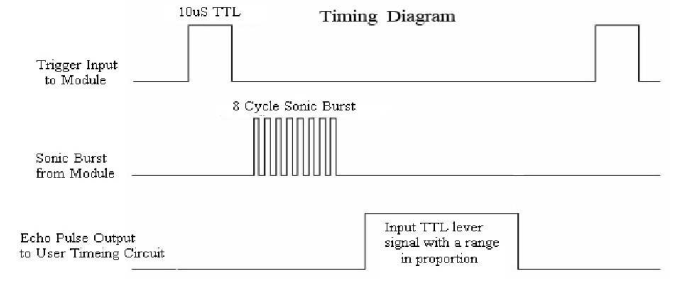
Figure 6: HC-SR04 operation description, screenshot from reference (3)
As can be seen from this figure, to gather a distance, we had to send a trigger pulse for 10 microseconds on the trigger pin, then wait until the echo pin went high and then base the distance off of how long the echo pin stays high. To do this, we used the hardware_gpio library to create input and output gpio pins for the trigger and echo pins respectively. Then, we used the PT_YIELD_usec() method to count microseconds. Therefore, we'd do
gpio_put(trigger,1);
PT_YIELD_usec(10);
gpio_put(trigger,0);
cnt = 0;
if(gpio_get(echo)){
while(gpio_get(echo)){
cnt++;
PT_YIELD_usec(1);
}
}
This yielded us a cnt variable corresponding to the distance recorded by the ultrasonic sensor. One issue with this was that cnt was relative and not an absolute distance. There was no problem though as all of our distances were relative, we could change the yield time inbetween increases of cnt in order to make far recorded distances have a large cnt value and small distances have a small cnt value.
The reason why this sensor was not used was that the range was very limited. The sensor would only measure up to about 300mm which was much less than the distances we wished to measure. The laser sensor on the other hand is rated for a maximum of 400mm, but is actually able to record distances over a meter, so the laser sensor was used instead. A drawback to the laser sensor as compared to the ultrasonic sensor is that the laser sensor takes longer to update. We cannot control this value as the sensor simply sends its results. It is not manually triggered like the ultrasonic sensor.
Now back to the higher level threads, protothread_laser's job is simply to call laser_read() and then yield for around 0.1s using PT_YIELD_usec(). This allows a consistent distance measurement every 0.1s.
The second thread protothread_sweep was created to use the distance value updated with protothread_laser and update the position of the gun platform accordingly. To do this, we first had to interface with our SG90 servo motor by creating a 'set angle' function that would take in an angle in degrees and move the servo motor to that position. From looking at figure 7,
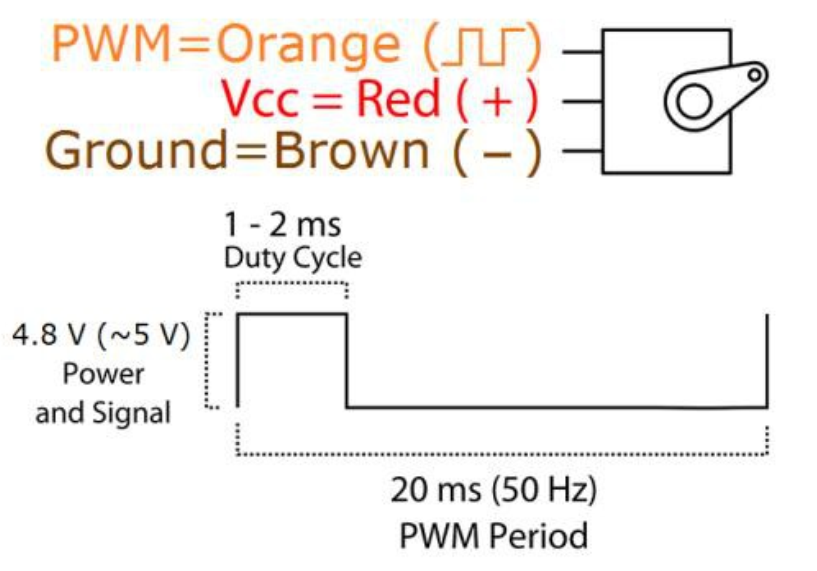
Figure 7: SG90 operation description, screenshot from reference (1)
It can be seen that the servo motor operates with an input 50Hz pwm signal. The angle which the servo motor moves to is dependent on the duty cycle percentage which from reference (1) was about 5% for a -90 degrees and 10% for 90 degrees. Therefore to operate this servo motor, we framed our code off of the pwm_demo from the lab code. The important parameters we needed were how to achieve a 50Hz. To do this we needed to manipulate the clockdiv and wrap values when setting the pwm parameters. To get the clock that the pwm was basing off to be smaller, we wanted to reduce the pwm clock to 1.25MHz, but the standard clock rate for the pico is 125MHz, so
It begs the question of why we couldn't make the clockdiv a more wieldy value to bring the clock to 1kHz. The issue with that is that looking at the pico datasheet, the value that can be sent to pwm_set_clkdiv is 255, so we had to choose a value within 0-255.
Finally, we needed to set our wrap value for a 50Hz signal. The wrap value is the period of the pwm signal in number of cycles, so
With these values calculated, we could now setup the pwm module.
We setup the pwm module according to the pwm_demo code but with our calculated parameters. We also did not initialize a pwm interrupt for this slice as will be discussed later. To write our set_angle method, we had to figure out how to convert our input angle to the appropriate output duty cycle. As previously discussed, 5% duty cycle corresponded to -90 degrees and 10% to 90 degrees. With a wrap value of 25000, a duty cycle value of 2500 corresponded to 90 degrees and 1250 corresponded to -90 degrees. When these values are inputted in pwm_set_chan_level, they correspond to the number of cycles the signal remains high. Therefore,
With this calculated, set_angle simply has to clamp our input angle within -90 and 90 degrees and then calculate the desired angle based on the last formula, then use pwm_set_chan_level to assign the pwm output to the servo motor. set_angle took in a float as an angle but assigned an integer to the pwm output. It was best to use a more precise angle and then simply estimate the output of the formula rather than estimating the input angle and then plugging it into the formula.
Next we needed to drive our DC motor. We used the DC motor from Lab3, so we simply needed to drive our h-bridge circuit with pwm-inputs. The factors we considered when setting up this module was that we wanted maximum power from the motor when pulling the trigger. We also wanted control over the motor to manipulate the placement of the gun at any point. Due to that we needed to do a few things.
First, like the pwm_demo we initialized another pwm_slice. This time, we used the same clkdiv and wrapval values as the previous pwm module as 50Hz was fast enough for the rate at which the system needed to update this motor. The next step was to setup the on_wrap interrupt handler to map to this module. We found that irq_set_exclusive_handler would, as the method name suggests, assign an interrupt handler to any pwm wrap interrupt. Since we wanted to manually control the DC motor through interrupts, this was the best pwm channel to enable interrupts for. Because of this, we disable interrupts on the servo motor pwm channel as we didn't do wrap value updating on that channel.
In order to achieve manual control we used the pwm wrap handler on_pwm_wrap_motor. We then used the two buttons in our hardware diagram to control this motor. The interrupt handler checks the values of both of the buttons. If one of them is high, then it setups the pwm to 100% duty cycle in the direction corresponding to whichever button was pressed. Once the button is let go, the interrupt handler will execute again and find the button signal low and thus stop the motor.
With the motors fully integrated, we can then discuss our protothread_sweep function. The sweeping was implemented via its own thread labelled protothread_sweep. Notice that it is just a while(1) loop that will sweep back and forth from angles start = -90 to end = 90 by either incrementing an integer i++ if reverse == false and decrementing i-- if reverse == true. During each iteration of the loop, if the turret is not locked on to any object, set_angle(i) is used to change the angle of the servo. The set_angle code can be seen below. void set_angle(float angle) will take in floats anywhere from -90.0 to 90.0.
void set_angle(float angle)
{
// 1250 = -90
// 1875 = 0
// 2500 = 90
// clamp angle at either -90 or 90 degrees
if (angle > 90)
angle = 90;
else if (angle < -90)
angle = -90;
control = 1875 + 6.94 * 2 * angle;
pwm_set_chan_level(slice_num, PWM_CHAN_B, control);
}
In order to change the speed at which the servo sweeps, we change how fast the while loop runs. At the end of the while loop, we yield for a given amount of time.
PT_YIELD_usec(delay * 1000);
Where delay = 45. This means that at the end of each iteration, the sweeping thread will yield for about 0.045 seconds. This means that the servo will sweep at about 22 degrees a second. Ideally, we would like the sweep to be faster, but we were limited by the constraints highlighted in the high level overview. This was something that just didn't work as well as intended. The rest of the sweeping algorithm is a combination of different states. Thus, we can highlight the general sweeping algorithm with the FSM below.
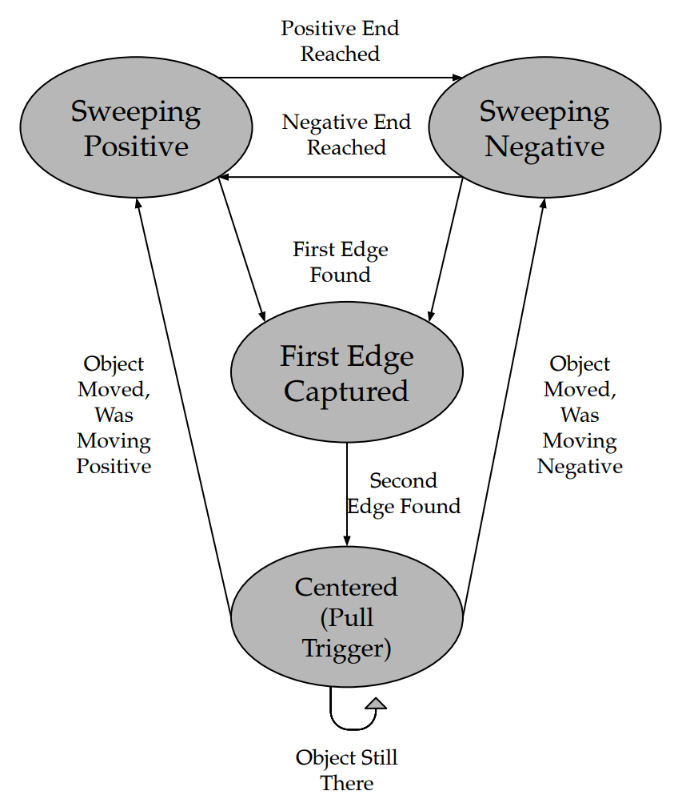
Figure 8: High Level FSM
Notice that there are four main states. The servo is either sweeping positively (i++), sweeping negatively (i--), found the first edge of the object, or locked onto the target after detecting the second edge. The following code is the transition to the First Edge Captured state.
if (distance < VISUAL_MAX && !first_captured)
{
first_angle = i;
first_captured = true;
}
Notice that the way the first edge is captured is by checking to see if the distance from the time-of-flight sensor is less than the object detection range – where VISUAL_MAX is set to 1.5 meters – and if the first edge has not been captured yet. Next, the turret will continue sweeping until the next edge of the object is found.
else if (distance > VISUAL_MAX && first_captured && !second_captured)
{
second_angle = i;
second_captured = true;
}
Notice how the second edge is captured when the sensor range goes back over the VISUAL_MAX range, and if the second edge has not been captured yet. Then, the code will go into the final state once both edges are captured. This is highlighted in the code below.
if (first_captured && second_captured)
{
// Set to average angle
Num = (first_angle + second_angle)/2;
set_angle(Num);
i = Num;
running = 1;
pwm_set_chan_level(slice_num_motor, PWM_CHAN_A, WRAPVAL);
pwm_set_chan_level(slice_num_motor, PWM_CHAN_B, 0);
PT_YIELD_usec(200000);
running = 0;
// If the object moves, then the servo will start sweeping again
if (distance > DIST_MAX)
{
dist_max_counter ++;
if (dist_max_counter >= 8){
dist_max_counter = 0;
i = (first_angle + second_angle) / 2;
first_captured = false;
second_captured = false;
}
}
}
When the first and second edges are captured, the servo will be set to the average angle between the two edges of the object. This will then set the corresponding PWM channels that pull the trigger to the mechanism. Here we set the variable running to 1. This variable is important as in the on_pwm_wrap_motor function, if running = 1, the function will not set the pwm channels to 0% duty cycle even if both buttons are not pressed. Once running is set to 0, the pwm channels will be set to 0 again. Notice that we also yield for 2 seconds. This is because we want to guarantee that the turret stays centered for a short amount of time. The final transition occurs when the object moves away. We sense this by checking the distance against DIST_MAX, which is set to some distance threshold, say 1.5 meters like VISUAL_MAX. After the sensor has gathered a few pieces of data that were beyond the DIST_MAX range, the system would go back to sweeping how it was.
The final thread that we made was protothread_serial. This thread would print variable information to the computer using the serial_write and serial_read functions from lab3 and lab2. This thread printed out distance, first_captured, second_captured, and running. By printing out these variables we would know the current read distance, if the first side of an object had been detected, if the second side of the object had been detected, and if the device had begun to shoot.
With our program and circuit built, we needed to assemble our nerf gun and platform which ended of being the hardest aspect of the project. Firstly we needed to assemble our moving platform. To assemble the base we used an old plastic platform we had found. We then hot glued our servo motor to an opening in the platform.
To create our platform we used LEGO Mindstorms parts from the lab. We used the parts as instead of 3D printing each individual piece in our assembly, we could prototype our mechanisms with prebuilt pieces. The most important reason why we used these pieces was that we needed a large gear train. The reason for the gear is due to the nerf gun trigger. The nerf gun required a large amount of force. We didn't measure the force required, but a person had to squeeze the trigger fairly hard to pull the trigger. We had to pull this trigger with the power of a small DC motor, so to do this we needed to use mechanical advantage by way of gear ratios. The way gear ratios work is that
By this logic, if a 3 tooth gear drives a 9 tooth gear, then
which means that for every 3 rotations of the 3 tooth gear, the 9 tooth gear makes 1 rotation also meaning that this system will provide 3 times the torque compared to a 1 gear system as the torque required to rotate the 9 tooth gear once will be split over the 3 rotations it requires to rotate the 3 tooth gear.
Using these gear ratios, we used sets of 40, 24, and 8 tooth gears as shown in this photo.
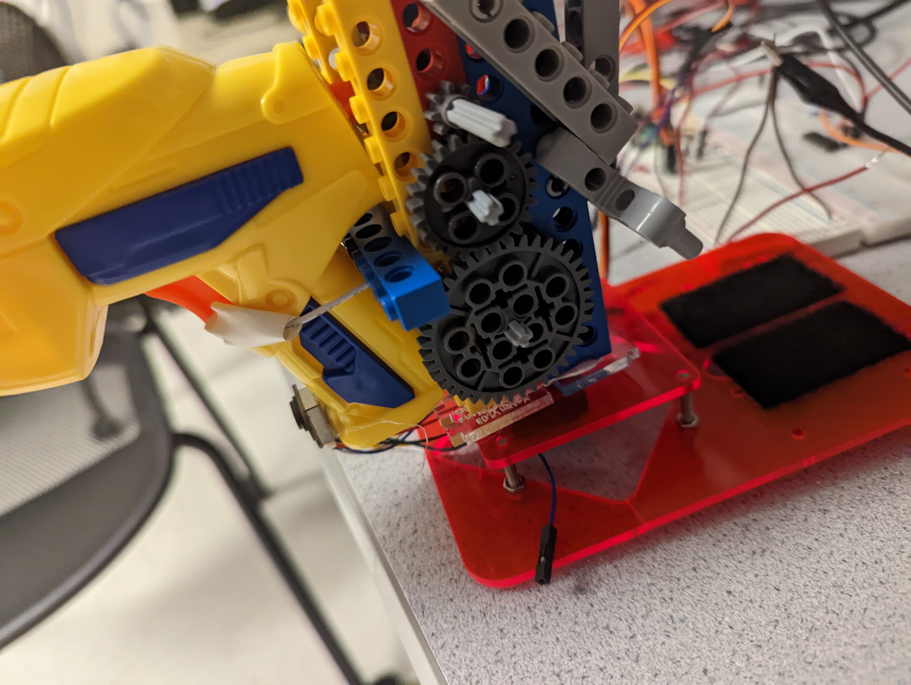
Figure 9: Photo of gear train
As can be seen, the gear train has a 40 tooth driven gear and an 8 tooth driving gear, so
Now where the motor attaches to the gear train, the driven gear from the main train is actual the driven section of another gear train with a 40 and
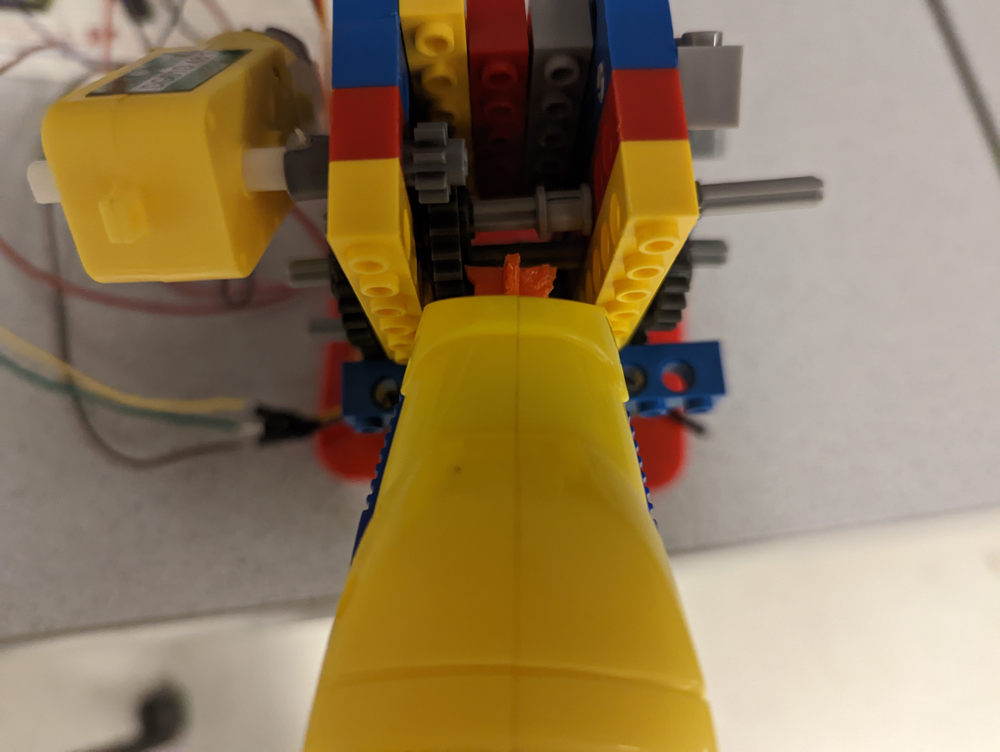
Figure 10: Photo of where motor attaches to gear train
So with this gear train, the DC motor can exert 25 times more pulling force than previously allowed
As seen from the previous images, the way the nerf gun is triggered is that a hole was drilled in the trigger of the nerf gun. Then, a wire was threaded through the hole and attached to a wheel. This wheel is then driven by the driven gear of the gear train in the picture. When the nerf needs to be shot, the motor turns and the wheel and thus the wire pulls on the nerf gun trigger with 25 times the force of the motor, thus exerting enough force to pull the trigger and release the nerf gun bullet. One problem we had was that the axle which would drive the wheel would bend while trying to pull the trigger. This was because the driven gear only drove the axle on one side of the structure, but counterforces acted on both sides of the wheel, so the axle would end up torqued and thus bend. To counteract this, the gear train was mirrored on the other side of the structure, so that both sides of the axle were driven.
One problem we had with the nerf gun was that initially we needed a much bigger gear train. We used a total gear ratio of about 125:1 and the nerf gun trigger was still difficult to pull. We found that the a way to lower the force needed to pull the trigger was by filling down the internal trigger mechanism. By filling down the trigger, much less force was required to pull the trigger thus allowing us to use a smaller gear train and not deal with unwieldy counterforce.
Another problem we had was with our h-bridge circuit. If we connected the anode to one of our h-bridge outputs, when the nerf gun is supposed to fire, the DC motor will be moved forward with a 100% duty cycle at the cathode and 0% duty cycle at the anode, but with this setup, the motor would not have the force to pull the trigger. If we instead moved the anode of the motor directly to ground, the motor would have the force to pull the trigger. The reason for this may be the fact that the l293 is a set of half h-bridge drivers, so they may not have perfectly symmetrical outputs, so the input of one h-bridge channel may affect the other thus not allowing the anode side to go completely to ground.
The final step in our assembly was to attach the laser sensor to our gun. The goal was to keep the gun out of the field of view of the laser sensor and allow its measured distance to match up with the direction of the gun. To do this, we found attaching the sensor to the handle of the gun as shown in our photo proved to provide a consistent and accurate measurement.
The results of the design for the intended purpose were successful. The turret was able to lock onto a static target and pull the trigger with accuracy. However, parameters had to be tuned to enable this accuracy. Above, we highlight how the delay parameter changes the speed that the servo rotates. In the demonstration, it was set to 45, which corresponds to a rotation rate of around 22 degrees per second. This means that the servo will sweep from one side to the other in a little over 8 seconds. This is somewhat slow but was around the threshold speed for accurate results. Ideally, delay could be something along the lines of 20, which would rotate at about 50 degrees per second, but the aiming would become a lot less accurate as we travelled to values of 40 and below. This was because the time-of-flight sensor collected data at a rather slow rate. Thus, if the turret was moving fast, the sensor would begin to lag behind the rate of rotation. We noticed that at delay = 40 there was about a 15 degree offset between the center of the target and where the turret actually centered. At faster rates, the system would only become more inaccurate.
It is also important that the system becomes less accurate when an object is not perfectly static. For example, if a person is walking in front of the turret, the sensor will have a difficult time centering, because it makes capturing the first and second edges much more complicated. Locking onto a moving target would have been ideal, but was not able to fully be accomplished. This is mainly because we were able to integrate the PIR motion detectors, but they were unreliable, inaccurate, and sensitive.
One really successful part of the design was that if the object was static, the system could accurately aim at targets up to and a little beyond 1.5 meters. This is a lot further than originally intended, since we originally intended only to use an ultrasonic sensor (which could only accurately perform up to 0.3 meters).
Testing the design mostly came in testing the functionality of the design (black-box). An object would be placed in front of the turret, and the turret would be tested upon how accurately it could center on that object. The parameters in the code would be changed until optimized for accuracy. However, to get to the point where we could test the functionality of a fully integrated product, we had to test the individual devices along the way. Particularly, the print terminal served as an extremely important tool to test the functionality of the sensors, and any part of the code. For example, the values from the sensors were always sent to terminal to ensure that the sensor was reading the right distance. Further, whether or not the software was attempting to pull the trigger happened to be another important signal to observe.
Since the design was heavily hardware based, it is no surprise that there were some hardware hiccups along the way. To help debug some of these problems, the oscilloscope was extremely useful. With the oscilloscope, we were able to see whether or not signals were correct to help narrow down any issues. This proved very useful as it is an extremely common issue for jumper wires to break, which happened to be a problem multiple times throughout the implementation.
The nice part about our design, to ensure safety, is that the turret could operate without any projectiles. It was important in demonstrations, or in environments where other people were around, to ensure safety by not putting any nerf bullets into the turret. In fact, the functionality would be the exact same, except the target would just dry shoot. It was very important to us that if a bullet was loaded, no one else was around, and that the turret wasn’t shooting at eye level. Another nice part of the design was that it was very usable by other people. The user doesn’t have to do anything after it the turret is turned on since it is completely autonomous. To load the turret, there were two buttons to spin the motor in reverse (to give slack for loading) and forward (to tighten and lock the gun into place).
Originally, we planned to have a nerf gun turret that could lock onto a moving object and shoot that object. We were able to lock onto stationary objects, but were not able to track moving objects. This is mostly due to the limitations of a single sensor system and the uncertainties that come with it. Another issue that kept us from tracking moving objects was that our original plan to use PIR motion sensors along with the laser sensor did not happen. Since PIR motion sensors were very inconsistent, they would have impeded the design more than help it, therefore we had no motion sensing, only position sensing. Except for that, the design met expectations in terms of sensing stationary objects. The original plan was to have the gun also vertically aim at the target as well as horizontally, but due to the dangers of shooting at people's heads, vertical aiming wasn't necessary as objects aimed at were close enough that the dart could objects within its detection range consistently.
If we were to do this differently we would have used more robust parts. Our sensors, lego pieces, motors etc were fairly brittle and inconsistent. If we were able to use more premium and robust hardware, this would have increased the reliability and effectiveness of the device considerably. Another thing we might do differently would be to try to use a camera. Though image processing is extremely cpu costly, this would have given us considerably more options in object detection as using visual imaging, we could have tracked entire objects and their position in order to aim the gun. https://youtu.be/S3CwzkT6cK4 shows that with a weaker device, visual detection can still be used to great effect, so if we could do this over again, we most likely would have used a camera instead of a laser sensor.
In terms of meeting the applicable standards, we maintained a safe voltage and strayed away from using projectiles as they were dangerous to others.
In terms of our final design, the only code we reused was from the pwm_demo file and the cmake files associated with the pwm_demo file. We were influenced by our references in the appendix, but didn't copy any ideas directly. We were were mainly influenced by the video https://youtu.be/yTYcKkbNFOY.
There are most likely no possibilities for a patent on this design. This design was mostly a proof of concept for the minimum hardware needed to detect an object, but in mass production, auto targeting systems can be created using much cheaper methods.
References used: